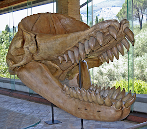

The megalodon were likely a predatory species and very possibly even an apex predator. It's size, high speed swimming capability, powerful jaws, and formidable feeding apparatus made it capable of consuming almost anything it liked. The megalodon fed on many species such as dolphins, small whales, sperm whales, large sea turtles, and seals. They also would sometimes go after smaller sharks. Bite marks on whale fossils suggest the megalodon engaged in complex feeding strategies unlike any other species of shark. Based off the remains of an unknown prehistoric baleen whale, the megalodon probably went for the heart and lungs as indicated by bite marks indicated on the rib cage of the whale. It's also suggested that stategy changed with prey of different sizes. Some smaller cetaceans were rammed with great force from below, showing the megalodon didn't use only one strategy. During the Pliocene, cetaceans started to grow larger and smarter. Megalodons adapted their strategies to overpower their prey. Vertebrae of large whales from the Pliocene have been found with bite marks, suggesting the megalodon would rip flippers off before feeding and killing. Megalodons lived in an extremely competitive environment, however they were at the apex of the food chain. Megalodons also shared the ocean with whale-eating odontocetes (toothed whales). Since the megalodon was so powerful, these odontocetes developed defense mechanisms, like the killer whale becoming pack hunters or attaining gigantic sizes, like the livyatan melvillei (which grew from 44 to 57 feet). The skull of a livyatan melvillei is seen above.